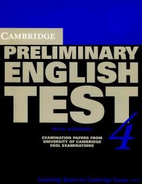

CPPET imtihoniga tayyorgarlik ko'rish uchun rasmiy testlar to'plami.
Ushbu kitob Cambridge ESOL tomonidan ishlab chiqilgan PET (Preliminary English Test) imtihoniga tayyorgarlik ko'rish uchun mo'ljallangan rasmiy testlar to'plamidir. Unda to'rtta to'liq imtihon varianti, javoblar kalitlari va o'zini o'zi tekshirish uchun zarur bo'lgan materiallar keltirilgan.